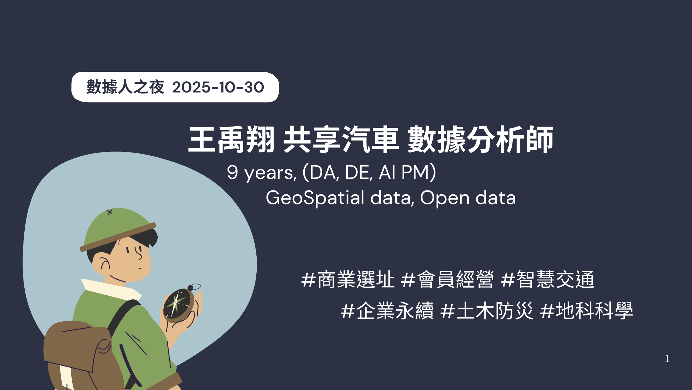
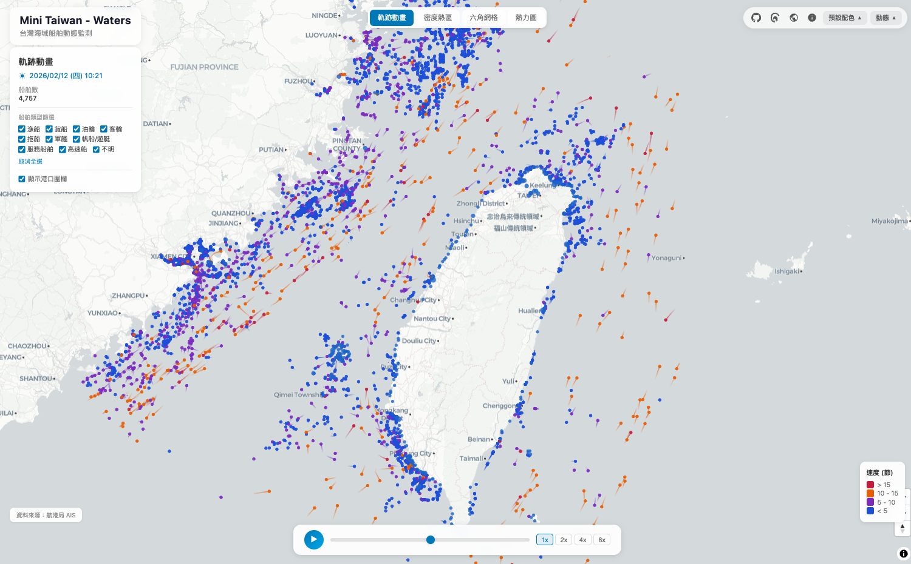
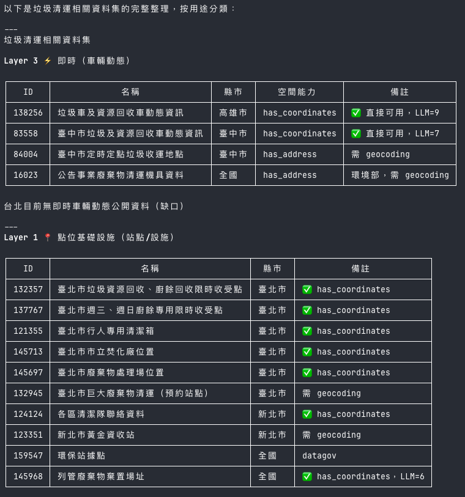
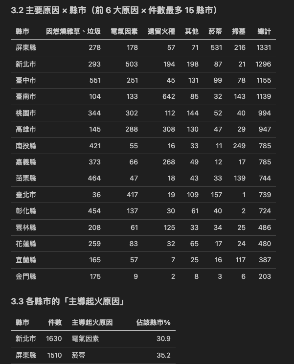
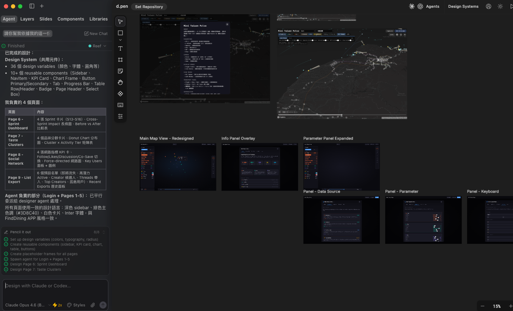
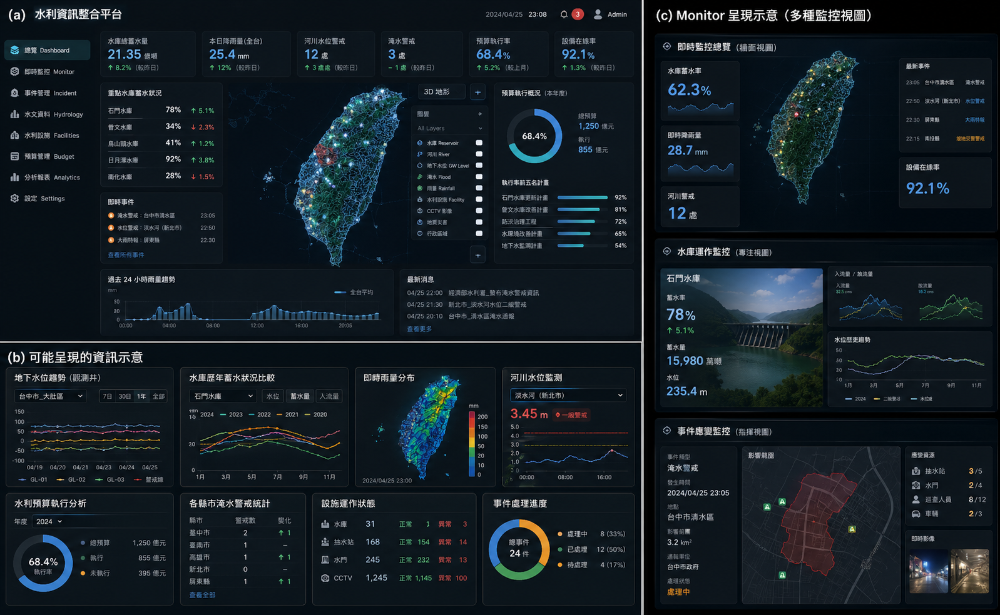
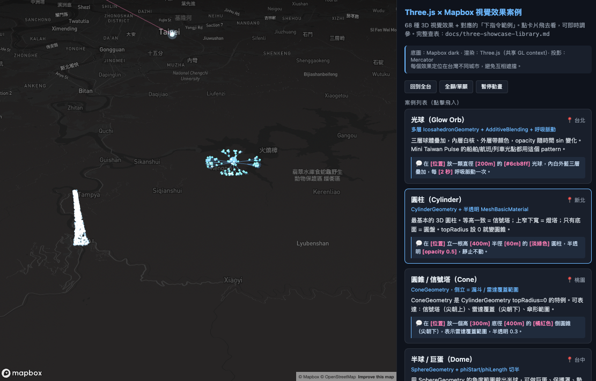
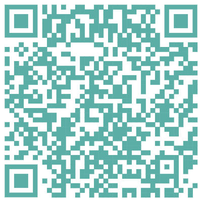

MIGU · DATA NIGHT 2026
2026.04.30
FROM ONE TAMSUI–XINYI LINE
從一列
淡水信義線開始
我與 Claude Code 的台灣開放資料漫遊
migu · 資料分析師 │ 數據人之夜 · 2026.04.30
當 AI 已能自己寫 ETL，
資料人不是消失，而是升級為系統設計者。
資料人不是消失，而是升級為系統設計者。
S00 · WHO · 自我介紹
02 / 52
// HELLO
Hi, 我是 migu
資料分析師 · 都計系畢業
- 大學都市計畫系 當時碰過一點 GIS
- 畢業之後走資料分析這條路，沒有再持續鑽研 GIS
- 這幾個月把興趣做成了一個系統
S00 · WHO · 為什麼是我
03 / 52
兩條長線
為什麼是我來講這個？
一個資料分析師、兩條同時在跑的長線
01本業 / DAY JOB
2022 GPT-3.5
協作 / 半放權
2026
用 AI 取代我自己
02GIS / SIDE PROJECT
2025 啟動
2026
完全放權給 AI
→
這場分享回答的是：當你願意完全放權，AI 能把資料人帶到哪裡？
S01 · 起點與案例 · ORIGIN
04 / 52
DAY 0 · 一切的起點
去年的那場聚會，
禹翔的那份簡報
原來台灣有這麼多開放資料可以拿。
第一個工具是 Kepler.gl。
把 CSV 拖進去，地圖就出來了。
把 CSV 拖進去，地圖就出來了。
— 看到結果的速度太快，我也要做。

王禹翔 · 數據人之夜 2025.10.30
S01 · 起點與案例 · MINI TOKYO
05 / 52
↓ 切到瀏覽器 ↓minitokyo3d.com ↗
第二個觸發 · MINITOKYO 3D
原來資料可以
這麼有「脈搏感」
看到列車在地圖上動的那一刻：
「我也想要做！」
「我也想要做！」
// SIGNAL
這是我從「做圖」走向「做系統」的第一個訊號。
★ LIVE DEMO 1
S01 · 起點與案例 · MINI TAIPEI
↓ 切到瀏覽器 ↓mini-taiwan-learning-project.itsmigu.com ↗
CASE 01 / 04
Mini Taipei
靜態 → 動態的第一步｜淡水信義線 → 6 大運輸系統
- SOURCE TDX 捷運 API
- SCALE 6 systems · 992 trains
- STACK Vite · Mapbox GL JS
- — 我沒寫過任何 GIS 程式 —
★ LIVE DEMO 2
S01 · 起點與案例 · PLAN ART
↓ 切到瀏覽器 ↓flight-arc.itsmigu.com ↗
CASE 02 / 04
Plan Art
航班軌跡藝術 · 資料的另一種樣貌
觸發：在北美館看展時，我覺得飛機軌跡可以變成藝術品。
- SOURCE FlightRadar24 API
- SCALE 10,700+ flights · 95+ airports
- STACK React 19 · Mapbox v3 · Three.js
- RENDER GLSL 彗尾光軌
S01 · 起點與案例 · CASE 03/04 · SHIP
08 / 52
CASE 3 · SHIP 船舶
從少量靜態，
到大量即時 GPS
第一次走進「每十分鐘一筆」的時序資料
SOURCE航港局 AIS 開放資料
UPGRADE時刻表 → GPS 即時點位 · 每 10 min
FILTER台灣海域 bbox · GPS 跳躍排除 · MMSI 校驗
RENDERInstanced 光球 · 30 min 漸層拖尾
做完飛機、做完船 — 下一步當然是把它們疊在一起。

★ LIVE DEMO 3
S01 · 起點與案例 · MINI TAIWAN PULSE
↓ 切到瀏覽器 ↓
CASE 04 / 04 · 終點
Mini Taiwan Pulse
單一資料 → 整合資料 → 時空間資料庫
23圖層
LAYERS
5,700+ 公車
TDX BUSES
9分類
CATEGORIES
1時空間 DB
SUPABASE RPC
MOVING · NEWS · STATION · ROUTE · INFRA · ANALYTICS · MONITOR · ENVIRON · HAZARD
S01 · 起點與案例 · RECAP
10 / 52
四個案例 · 一條路徑
從一條捷運線，到整個台灣
軌跡 → 動態 → 藝術 → 整合（終點）
STEP 01
靜態軌道
Mini Taipei
淡水信義線一條線
淡水信義線一條線
STEP 02
動態 + 多模式
擴到 6 大運輸系統
＋ 飛機 ＋ 船
＋ 飛機 ＋ 船
STEP 03
藝術化
Plan Art · TRA Art Map
同一份資料、不同 framing
同一份資料、不同 framing
STEP 04 · 終點
整合
Mini Taiwan Pulse
所有資料疊成一張圖
所有資料疊成一張圖
→ 其他案例 · 同一個資料庫的延伸應用
S02 · GIS 心法 · 為什麼做這件事
11 / 52
為什麼是 GIS？
因為這是 side project——
我想做開心的事。
我喜歡觀察城市的脈動。
// 上班時 · DAY JOB
「這個分析能促成什麼實際改變？」
// SIDE PROJECT
「我開心想做什麼就做什麼」
?
在這個前提下，我只想知道兩件事：
台灣城市怎麼運作？ · 公開資料能做到哪些程度？
台灣城市怎麼運作？ · 公開資料能做到哪些程度？
S02 · GIS 心法 · 方法論循環
12 / 52
先觀察、問題會自己浮出來
觀察 → 疑問 → 情報
盤點資料的副產品，是更好的問題
01
觀察
OBSERVE
盤點開放資料
低成本擴覆蓋度
低成本擴覆蓋度
02
疑問
QUESTION
問題從資料中
自然浮出來
自然浮出來
03
情報
INTEL
變成可以決策的
儀表板與警示
儀表板與警示
↻ 持續迴圈 · NEW SIGNALS BACK TO OBSERVE
// RAIL為什麼週末跟平日班次差異不大？
// FACILITY設施密度跟日夜人口有關係嗎？
// WATER水夠不夠？什麼狀況需要警示？
S02 · GIS 心法 · 全交給 AI
13 / 52
完全放權的練習場
我只做兩件事
建立架構 · 溝通成果
// HUMAN · ME
我做的事
- 建立架構 決定要長什麼樣
- 溝通成果 驗收結果合不合理
- 異常驗收 看 dashboard、肉眼檢查
完全放權
// AGENT · CLAUDE CODE
AI 做的事
- 技術選型 / 程式撰寫
- 除錯 / 部署 / 優化
- Schema 設計細節 / SQL / GLSL
- 所有我「不會也不確定」的東西
S02 · GIS 心法 · CLAUDE CODE 三世代
14 / 52
問答 → 做專案 → 建系統
現在在哪個階段？
1.0
對話式
// 處理單點問題
把某個資料視覺化
一次解一個小包
一次解一個小包
2.0
完成專案
// 可操作的產品
不再是一張 GIS 疊圖
而是一個組合起來的專案
而是一個組合起來的專案
3.0
建立系統
// 減少人介入、自我迭代
架構先定
Agent 自己跑、自己長
Agent 自己跑、自己長
// 怎麼判斷自己準備進入下一階段？三項都打勾才進階
✓
已經熟悉現在的工作流程✓
想做更大、更複雜的事✓
大概知道下一步怎麼走
S02 · GIS 心法 · AGENTIC WORKFLOW
15 / 52
把專業詞翻譯成具體做法
給定環境 · 流程 · Skill / Hook / Agent
環境
Claude Code、skills、plugins、IDE
Claude Code、skills、plugins、IDE
流程
把工作拆成可重複的 loop
把工作拆成可重複的 loop
Skill / Hook / Agent
固定下來的子系統
固定下來的子系統
→ 我下大方向 prompt，
系統自己跑成閉環循環。
系統自己跑成閉環循環。
S03 · 系統四步驟 · OVERVIEW
17 / 52
承上頁 · 拆解 iDAW 全景
資料 → 觸發 → 整合 → 生成
01
資料接收
DATA INTAKE
外部 + 開放資料源
標準化、驗證、入庫
標準化、驗證、入庫
→ p.19–22
→
02
行動觸發
ACTION TRIGGER
監聽 / 排程 / 規則
什麼時候做什麼事
什麼時候做什麼事
→ p.23–24
→
03
知識整合
KNOWLEDGE FUSION
把零散資料變成
可推理的知識結構
可推理的知識結構
→ p.25–26
→
04
分析生成
ANALYZE & GENERATE
推理、對話、視覺化
產出 Pulse / Art / 報告
產出 Pulse / Art / 報告
→ p.27–31
// 接下來
先講第一步：資料接收 — 多源整合、標準化、驗證
S03 · 系統四步驟 · STEP 01 · 知識庫
19 / 52
資料接收 · 第一步
手動下載 → 上網找 → 系統化建構
A
// 最早期
手動下載
data.gov.tw 點 Excel
自己讀、自己存、自己想。
自己讀、自己存、自己想。
format.xlsx / .csv
where~/Downloads
limit人腦記憶
B
// 中期
上網找
API、PDF 報告、各縣市開放平台
—— 散落各處。
—— 散落各處。
sources22 縣市平台
extraNGO + 學術 + 民間
problem沒有索引
C
// NOW
結構化知識庫
每筆 metadata 標準化
存進 SQLite catalog。
存進 SQLite catalog。
sourcesdata.gov.tw
+ 所有縣市平台
+ 各部會平台
✓queryable 可自動化查詢
✓scalable 可自動化拓展
S03 · 系統四步驟 · STEP 02 · COLLECTORS
20 / 52
資料接收 · 第二步
30 個 Collector，每天早上一份 Review
// 來源涵蓋
陸運YouBike · Bus · VD · Freeway
鐵路TRA Train (live) · Timetable
航運Ship AIS · Ship TDX
航空FR24 · OpenSky
氣象Weather · CWA Satellite · Rain
災害Earthquake · NCDR Alerts
太空Satellite TLE · Launch
水文Reservoir · River · Ground
空品AQI · MicroSensor
⚠連錯 3 次 立即發 Telegram 告警
📊每天早上 09:00 推送 Daily Review
⏱每分鐘 tick · skip-if-running 防疊加
// 每天 09:00 推送 Daily Review · Telegram

S03 · 系統四步驟 · STEP 03 · LIFECYCLE
21 / 52
資料接收 · 第三步
本地優先 → 歸檔 → 冷儲存
// WHY
為什麼需要生命週期？因為資料量無上限增長，但預算有限 ——
用得到的放熱層、用不到的自動降層，不刪資料、只控成本。
用得到的放熱層、用不到的自動降層，不刪資料、只控成本。
DAY 0–7
本地 JSONL
Zeabur Volume
collector 直接寫入
collector 直接寫入
熱資料 · 100% 即時
每日 03:00
tar.gz 壓縮歸檔
▶
DAY 7–30
S3 STANDARD
壓縮成 tar.gz
整批上傳
整批上傳
100% 標準成本
Lifecycle 30d
自動降層
▶
DAY 30–90
STANDARD_IA
不常用
仍可即時讀取
仍可即時讀取
~60% 成本
Lifecycle 90d
自動降層
▶
DAY 90+
GLACIER_IR
毫秒存取
不需 restore
不需 restore
~25% 成本
// SUPABASE 旁路寫入
collect() 同時寫 DB · 失敗 buffer 重試 · 資料不刪除，只分層變便宜
S03 · 系統四步驟 · STEP 04 · SCHEMAS
22 / 52
資料接收 · 第四步
入庫：4 個 Schema · PostGIS
realtime
LIVE PULSE
即時資料
分區表 + current 表
分區表 + current 表
TABLESCALE
vehicle_positions5,700+
aviation_tracks10K+
ship_positions10 min
weather_obs~hr
earthquakelive
reference
STATIC LOOKUP
站點、機場、港口、POI
變動少的 reference
變動少的 reference
TABLEROWS
stations~5K
routes~1K
airports95+
poi (4square)29,556
spatial
GEO ANALYTICS
統計區、邊界、H3
環境圖層
環境圖層
TABLEROWS
statistical_areas11,490
h3_populationres 8/9
boundaries22 city
temperature_gridCWA
metadata
SYSTEM
資料集目錄
collector 心跳
匯入歷史
collector 心跳
匯入歷史
TABLEUSE
dataset_catalog52K
collector_heart5 min
import_logaudit
schema_evolDDL
PostgREST
前端要做選址分析 → 打 RPC 就好，不需要再寫一個後端。
S04 · AGENT · 規模的詛咒
24 / 52
為什麼要 Agentic OSINT
規模的詛咒
data.gov.tw · 各縣市 · 民間 — 人類掃不完
52,891
+22 縣市平台 ~6–7 萬筆（含重疊）
+民間 / NGO / 學術 還沒算
= 你的人腦掃不完 → 這就是 LLM 該介入的地方
S04 · AGENT · 盤點 × 關聯
25 / 52
把資料轉成 LLM 可觸及的形式之後
交給 Agent，盤點 → 關聯 → 產出
// 前置條件
資料 → LLM 可讀
統一目錄 · metadata · 結構化欄位
→
// AGENT 動腦
大量關係 × 跨主題
人腦無法逐筆比對的搜尋空間
→
// 產出
應該互相影響的資料集
自動拉出 · 互相關聯 · 可被驗收
①
盤點
跨平台、跨主題、跨格式 逐筆 vetting 不再只是關鍵字搜尋
②
關係抽取
抓出資料集之間應該會有的影響關係 時間 · 空間 · 主題
③
互相關聯
把零散資料拉成可被推理的網絡 Agent 自己跑下一步
// 一句話
資料能被 LLM 看見，Agent 才能幫你發現「哪些資料應該放在一起看」。
S04 · AGENT · 火災主題報告
26 / 52
Pipeline 跑完一次的真實產出
輸入一句話，產出整套盤點報告
「分析台灣火災相關公開資料」
// 候選池逐輪擴張
582
關鍵字命中
→
1,945
同義詞 + 主題擴張
→
2,404
FTS5 補搜 + 去重
21 平台 · 73,900 筆 統一目錄
// 一條龍 6 階段（自動拆解）
A
預防
B
應變
C
通報
D
起火分析
E
損失
F
報表
22 縣市 × 6 階段 — 自動產出覆蓋矩陣
// 獨家盤點
新竹 火災潛勢圖
臺北 搶救困難地區
桃園 埤塘救援
// GAPS
× 沒有即時火災 API
× 事件級座標稀缺
× 災後追蹤不公開
Pipeline 自動產出
我 沒 寫 一 個 字
S04 · AGENT · 實際運作 · 動腦
27 / 52
案例 · 垃圾清運主題盤點
Claude 自己拆主題 · 自己分層


S04 · AGENT · 實際運作 · 查詢結果
28 / 52
案例 · 加油站 / 用電統計合成策略
Agent 直接回 · 可落地的合成方案


S05 · 應用層 · 從靜態到 API
30 / 52
應用層 · 換掉資料源等於換掉天花板
靜態 JSON→時空間 API
把 aviation_data.json 換成 Supabase RPC / MVT 之後，前端能做的事被打開了兩個維度。
// BENEFIT 01
即時 交叉
不同資料源
同一個地圖、同一條時間軸，可以把航班 × 氣象 × 水位 × 地震 × 人口同步對齊查詢。Collector 一寫就更新，前端不用重新打包。
// SHARED TIME AXIS →
航班氣象水位地震人口
Realtime
Cross-source Join
One Time Axis
// BENEFIT 02
更 自動化 ·
更 Agentic 的分析
Agent 直接呼叫 RPC、自己挑欄位、自己跑空間 / 時序分析，不用我先把資料整理成檔案。查詢即分析，分析即下一個查詢。
// AGENT LOOP →
planqueryanalyzere-query
RPC for LLM
Self-iterating
No Pre-bake
S05 · 應用層 · ARCHITECTURE MULTIPLIER
31 / 52
// ONE BACKBONE · MANY SURFACES
同一套資料骨幹
長出不同形狀的應用
Supabase（PostGIS · pg_cron · 4 schemas）一次到位之後，每個新 App 不是「再蓋一個系統」，而是「再開一個視窗」。
// THE BACKBONE
Supabase
PostGIS · pg_cron · 4 schemas
datasets73,900+
collectorstick / min
RPCfor LLM & UI
storagetar.gz · lifecycle
↡
Mini Taiwan Pulse
即時地圖 · 23 圖層
Plan Art
航班軌跡 · FR24
Satellite Art
遙測影像 · tile
Taipei GIS Datamart
查詢 · 對外輸出
YouBike ML
借還預測 · 補車
下一個
想到就開一個 · 不重蓋
// COST OF NEXT APP
資料源複用
Schema複用
RPC複用
新增成本只剩前端
// SO WHAT
想到一個新場景，不用再蓋一個系統，只要決定「這次要把哪幾個圖層、用什麼互動端出來」。
S05 · 應用層 · 系統化分層
32 / 52
// CASE STUDY · WATER
以「水資源」為例
政府兩三百筆水資料，先依點 / 線 / 面盤點，再依怎麼來 → 怎麼留 → 怎麼用 → 何時警示重組。
// LAYERED GIS
POINT · LINE · AREA
→ NARRATIVE
POINT · LINE · AREA
→ NARRATIVE
點POINT · 站點
STATIC
水庫位置
雨量站
地下水位站
DYNAMIC
即時雨量
水庫水位（hr）
河川水位即時
線LINE · 河川 / 水道
STATIC
河川流域
水道網路
OSM Waterway
DYNAMIC
流量推估
（少量、可推算）
面AREA · 邊界 / 網格
STATIC
集水區邊界
水利分區
行政區
DYNAMIC
降雨網格
災害示警 polygon
土壤含水量
// 重組為故事性架構
01
怎麼來？
FACE降雨網格+FACE集水區邊界
02
怎麼留？
POINT水庫水位+FACE土壤含水量
03
怎麼用？
LINE河川流量+POINT地下水位
04
何時警示？
FACE網格水量趨勢+FACE災害示警
先盤點圖層，再依邏輯串成敘事——同一批資料，組裝出一個能講故事的系統。
S05 · 應用層 · CASE 01 · 火災分析
33 / 52
113 年火災事件 · 全國 15,405 筆
從 datagov:13764 一路打到「縣市 × 起火原因」
datagov:13764 · TGOS street-level 9,226 筆
鄉鎮 fallback 6,179 筆 · 空間用精確點位、時序用全量
鄉鎮 fallback 6,179 筆 · 空間用精確點位、時序用全量


// SO WHAT
這份 reflect 報告完全由 Agent 串 API 跑出來。「新北市最大宗起火原因是電氣因素 30.9%」「屏東縣是菸蒂 35.2%」——資料源換成 API 之後，這種跨欄位、跨主題的描述性分析，可以被 Agent 主動產出。
★ CASE 03 · LIVE DEMO 4
S05 · 應用層 · PULSE H3
↓ 切到瀏覽器 ↓
APPLICATION CASE · 寬 × 深 × 整合
Mini Taiwan Pulse
23 圖層整合 · Three.js CustomLayer × 6 · Overlay Registry
6CustomLayer
THREE.JS × MAPBOX
3files
NEW LAYER
4time-types
TRACK · SNAP · CYCLIC · STATIC
Mapbox GL JS（底圖） + Three.js × 6 CustomLayer + Mapbox native Layers
S06 · 循環 · WORLD MONITOR
36 / 52
未來模式 · 主題巡邏
給目標
Agent 跑完整循環
人類角色 ── 給目標、收報告
// STATUS 雛形已經在跑 · 還沒做完
S06 · 循環 · AGENT 自己跑
37 / 52
// 結果 · 當循環建立起來
Agent 自己掃定期資料
自己分析 · 自己給結果
01
定期掃資料
每週跑開放資料目錄差分，找出新增 / 更新的 dataset
→
02
自己執行分析
調用 Agent Orchestrator + Migu's GIS Agent，挑工具、跑空間 / 時序分析
→
03
定期回傳結果
brief / 報告 / 圖表自動產出，事件記錄與學習優化滾回去
// SO WHAT
人不用守在前面。給目標、收報告——其餘的事 Agent 自己排隊跑完。
★ 自動產出 · 每週一份
本週新增開放資料 brief
06
S07 · 我怎麼做我的應用 · BUILD
39 / 52
Section
我怎麼
做我的應用
從 Claude Code 接住 Human-in-the-loop，到設計流程、寫 code、測試，最後攤開成本。
→ HITL
FLOW
UI
CODE
COST
S07 · BUILD · HUMAN IN THE LOOP
40 / 52
監控 / 告警 / 驗收
架構層 in、技術層 out
// 架構層
HUMAN INDECISION LAYER
我必定介入
- Schema 設計
- 流程設計
- 抽象介面
- 異常驗收
- 資料品質抽檢
- 看 dashboard 肉眼檢查
// 技術層
AI ONLYEXECUTION LAYER
AI 完全自主
- 技術選型
- 程式撰寫
- SQL · GLSL
- 除錯 · 部署
- 優化 · refactor
// 監控層
SHAREDMONITOR LAYER
AI 自動報 · 人驗收
- 每日 Telegram 報告
- 連續錯誤告警
- 自動剔除異常
- 心跳監測
- count 變動警示
S07 · BUILD · 設計流程
41 / 52
DESIGN FLOW · 一個應用怎麼長出來
資料串接 → UI → 寫 code → 測試
// STEP 01
資料串接
承接前面：以前吃實體檔案，現在改吃時空間 API。同一條時間軸、跨資料源直查。
→Supabase RPC / MVTlive
→Collector layerwrite-thru
// STEP 02
做成 UI
介面從 Claude Code 自己畫，演變成Pencil → Claude Design → ChatGPT，像在跟設計團隊接力。
·Pencilarch sketch
·ChatGPTmock viz
// STEP 03
寫 code
放給 Claude Code，給原則、給過往案例。視覺化的部分會先做網頁打草稿（Three.js）。
·Claude Codemain
·three.js sandboxprobe
// STEP 04
測試
現在還是手工測。在試 Codex 的 Computer Use 能不能扛起這段。
·manualtoday
·Codex CUtrying
S07 · BUILD · STEP 02 · 做成 UI
42 / 52
UI EVOLUTION · 我設計介面的順序
介面演變 · 從 Claude Code 自己畫
到接力一棒一棒丟給更會畫的工具
Claude Code 自己設計
→
Pencil
→
Claude Design
→
ChatGPT
Pencil
// 架構草圖 · WIREFRAME / FLOW

交給 designer agent 排版 · Design System 共用元件 36 vars / 10+ components · 黑色 sidebar + Inter 字體
ChatGPT
// 視覺示意 · MOCKUP

把專案說清楚，請它幫我生幾張示意圖 · 變成接近 Palantir 的監控介面草稿，回頭餵給 Claude Code 寫
S07 · BUILD · STEP 03/04 · CODE × TEST
43 / 52
CODE × TEST · 把草圖變成跑得起來的東西
寫 code 沒特別招
給原則 · 給案例 · 視覺化先打草稿
// STEP 03 · 寫 CODE
Claude Code 為主
設定原則與過往案例，剩下交給它。視覺化這塊會先寫一個小網頁，把 three.js 的效果先確認好，再合進主專案。
// 原則：先 reflect 一遍 spec，再開始寫
// 案例：把過去寫過的 Layer 丟給它當 reference
// 視覺化：three.js 案例庫先打樣，再合進 Pulse

// STEP 04 · 測試
手工 → 嘗試 Codex Computer Use
現在還是手工測 · 地圖點一點、滑桿拉一拉。最近在玩 Codex 的 Computer Use，看能不能讓它自己開瀏覽器、點圖層、抓 console。
manual click-through
screenshot diff
console probe
★ Codex Computer Use（trying）
// THE GOAL
資料串接 → UI → 寫 code → 測試
四個 step 慢慢都長出 agent，人剩下挑方向跟驗收。
四個 step 慢慢都長出 agent，人剩下挑方向跟驗收。
S07 · BUILD · 成本與工具揭露
44 / 52
透明化
全部多少錢？
// 月費 + 一次性費用揭露
TDX
交通部 · 一次性
NT$ 400
Zeabur
一台 server · 月費
~12 USD
AWS S3
已套 lifecycle · 月費
~2 USD
FlightRadar24
API · 一次性
~90 USD
Claude Code
訂閱 · 依個人方案
訂閱
月費合計
不含 Claude
< 20 USD
// DESIGN STACK
工具揭露
Claude CodeCORE
PencilSKETCH
Claude DesignerVISUAL
ChatGPTCOPY
ZeaburHOST
SupabaseDB
AWS S3COLD
MapboxMAP
Three.js3D
07
S08 · 回到本業 · BACK TO DAYJOB
45 / 52
Section
回到
本業
GIS 是練習場，但 mindset 全帶回了本業——分析師升級成設計師。
→ BRIDGE
ANALYST → DESIGNER
BROUGHT BACK
開店勝率 AI
S08 · 回到本業 · BRIDGE
46 / 52
Bridge
GIS 是練習場，
但 mindset 全帶回了本業
01
Agentic mindset
放權 + 兩件事：架構與驗收。技術全部交出去。
02
熟悉 GIS 與開放資料
看懂資料結構、知道資料怎麼來、哪裡可以拿——這是與 AI 合作的基本口語。
03
讓資料 LLM-ready
將資料轉換為 LLM 能理解、能操作 的形式——schema 、索引、metadata 都預先銜好。
本業 · 資料分析
+
GIS Side Project
→
AI 原生工作流
S08 · 回到本業 · 分析師升級論
47 / 52
關鍵能力的轉變
從「做分析」到「設計系統」
// PAST
寫 SQL 跑數據
↓
出報表
↓
給結論
→
// NOW
定義架構
↓
AI 生 SQL / 報表 / 結論
↓
我做驗收
01
抽象
把重複工作抽成 schema、抽成 skill。
02
驗收
快速判斷 AI 結果合不合理——這需要本業底子。
03
架構直覺
知道哪些要解耦、哪些要常駐、哪些要自動化。
AI 越強，對錯判斷力越貴。
S08 · 回到本業 · 實作層的回流
48 / 52
已經帶回本業的事
給目標 / 架構 · AI 給結果
01
已上線
LLM ready 的 context 準備
02
已上線
自動化分析
給目標 + 架構，AI 自己撈資料、比對、套分析邏輯，給出結果。
03
已上線
固定週報
04
今天剛上線
開店勝率 AI 分析
同一套架構直接做進產品功能——下一頁就是它。
共同模式 · 我給目標 / 架構，AI 給結果 · 資料先備、機會後現
S08 · 回到本業 · 開店勝率 AI 分析
49 / 52
// 同一套架構 · 搬進產品功能
台灣餐飲開店勝率 AI 分析
S09 · 如何開始 · GETTING STARTED
50 / 52
明天就能做
如何開始？四步驟起手
01
找一個有興趣的主題
不要選最有商業價值的 — 選最讓你好奇的。
data.gov.tw
選一筆 · 複製網址
選一筆 · 複製網址
02
諮詢 Claude
把 URL 貼給 Claude，請它給具體步驟。
"我想用 Kepler.gl
把這個資料做成地圖，
請給我具體步驟"
03
拓展
第一個成功後，建你自己的 Data Connector，接更多。
// BaseCollector
class MyCollector(...):
def collect(): ...
04
發展成應用
包成一個你會用的 web app — 會用，才會持續。
→ Mini Taipei
→ Plan Art
→ Mini Taiwan Pulse
從最小的東西開始，慢慢擴大
S09 · 結語 · CLOSING
51 / 52
這一年我學到的
三句話總結
01先觀察，問題會自己浮出來。
02完全放權，AI 才會帶你到沒去過的地方。
03架構是新的 prompt — 當你的 prompt 越來越短，你的系統就越來越聰明。
S09 · 結語 · QA
52 / 52
Thanks for listening
Q&A
你想解開這座島的哪一塊拼圖？


水資源
空品
火災
地震
港口貿易
… 你想得到的
@migu
GITHUB · X · EMAIL